Controle de Feed - Configurações
é Sempre melhor recarregar o Twitter ao mudar alguma configuração.
Filtros de Conteúdo de Texto Indesejado
Configurações dos Filtros
Aplicar Filtros no Nome de Usuário
Aplica os Filtros no Conteúdo do Tweet e no Nome de Usuário que Postou. Desativar irá aplicar os filtros APENAS no Conteúdo do Tweet
Aplicar Filtros nas Previsões de URL
Aplica os Filtros nos Cards de Previsões de URLs (quando você digita um site e aparece um "Resumo" dele). Útil quando o Card possúi alguma Informação que gostaria de bloquear.
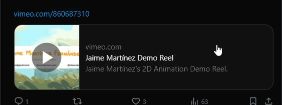
Aplicar Filtros nas Trends (Assuntos do Momento)
Aplica os Filtros nas Trends do Twitter, caso queira ocultar Assuntos do Momento relacionados á Política, basta inserir a Palavra "Política" no filtro de Palavras Personalizadas
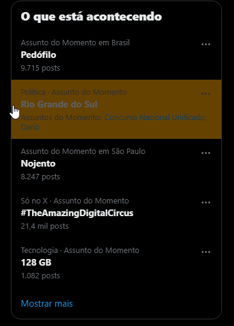
Remover Tweets com Scams Comuns
Remove Tweets com Scams comuns como $PARAM, $BITCOIN e outros termos usados por bots.
Escurecer Tweet ao Invés de Remover
Escurece e Muda para um Fundo Laranja, os Tweets afetados por algum filtro ao invés de remove-lo. (Útil para testar os filtros)
Tweets em Outros Idiomas
Remove Tweets quando Caracteres de Outros Idiomas são encontrados (AFETA TAMBÉM PESSOAS COM NICKNAMES P£Я$ØИΔŁƗZΔÐØ$ QUANDO A OPÇÃO "Aplicar Filtros no Nome de Usuário" Está ativada!)
Remover Tweets com Palavras em Chinês e Japonês
Remover Tweets com Palavras em Coreano
Remover Tweets com Palavras em Russo
Remover Tweets com Palavras em Árabe
Remover Tweets com Palavras em Hebraico
Remover Tweets com Palavras em indo-arianas como Hindí, Nepalês
Remover Tweets com Palavras em Vietnamita
Remover Tweets com Palavras em Tailândes
Remover Tweets com Palavras em Grego
Remover Tweets com Palavras em Amáricos
Filtros por Palavras Banidas
Aplicar Filtro Apenas em Palavras Completas
Aplica o Filtro apenas se for identificado uma Palavra Completa.
Filtrar usando RegEx
Melhora o Filtro deixando-o mais Agressivo aplicando o filtro dentro das palavras, mas pode afetar tweets inocentes como por Exemplo o Filtro "porn" irá ser ativado em palavras não-relacionadas como "pornélio", recomenda-se deixar desativado caso tenha problemas ou considere melhorar os filtros Manuais colocando palavras mais completas.
DICA DE MESTRE: Ponto (.): Corresponde a qualquer caractere único, exceto uma nova linha. Por exemplo, /a.c/ corresponderá a "abc", "adc", "aec", etc.
Asterisco (*): O asterisco corresponde a zero ou mais ocorrências do caractere anterior. Por exemplo, /ab*c/ corresponderá a "ac", "abc", "abbc", "abbbc", etc.
Interrogação (?): A interrogação torna o caractere anterior opcional, correspondendo a zero ou uma ocorrência. Por exemplo, /colou?r/ corresponderá a "color" e "colour".
Mais (+): O mais corresponde a uma ou mais ocorrências do caractere anterior. Por exemplo, /go+l/ corresponderá a "gol", "gool", "gooool", etc.
Parênteses (()): Os parênteses são usados para agrupar partes da expressão regular. Isso pode ser útil para aplicar quantificadores a várias partes da expressão ou para capturar partes específicas da correspondência. Por exemplo, /(abc)+/ corresponderá a "abc", "abcabc", "abcabcabc", etc.
Colchetes ([]): Os colchetes definem uma classe de caracteres, correspondendo a qualquer caractere dentro dos colchetes. Por exemplo, /[aeiou]/ corresponderá a qualquer vogal.
Ativar Filtro de Palavras Customizadas
Remove Tweets que contém Termos Definidos por Você, digite abaixo as palavras que quer Filtrar nos Tweets separando um Elemento por Linha. Você pode escrever oque quiser, caso queira por exemplo banir algum site basta coloca-lo com o prefixo como por exemplo Google.com/ ao invés de só Google
Para Banir de forma eficiente hashtags, NÃO digite a Hashtag (#), só a palavra na frente caso a Opção "Aplicar Filtros apenas em Palavras Completas" Esteja ativa.
Ofuscar as Palavras Encontradas ao invés de remover o tweet.
Ofusca as palavras encontradas, deixando-a ilegivel e com um fundo laranja, a palavra é revelada ao passar o mouse por cima :D.
Personalização Visual
Menu do Twitter na Horizontal
Faz com que o Menu do Twitter apareça no Topo da Tela na Horizontal
Ferramentas Extras
Remover Tweets com ＬＥＴＲＡＳ ＧＩＧＡＮＴＥＳ
Remove Tweets que contenham esses tipos de Letras, geralmente usado por BOTS
Remover Tweets Vazios (que contem somente Emotes)
Remove os Tweets que contenham Apenas Emotes no conteúdo. Isso ignora tweets que contenham apenas emotes junto com alguma imagem/video no mesmo tweet.
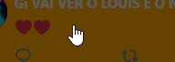
Remover Tweets que contenham Votações
Remove Automáticamente os Tweets que contenham Votações, como "Qual seu Time Favorito?" ou "Qual cor você prefere?"...
Remover Tweets que contenham Retweets próprios
Remove Automáticamente tweets que contenham apenas um Retweet de sí próprio (como por exemplo alguém chega na sua postagem e posta um OUTRO tweet dela mesma).
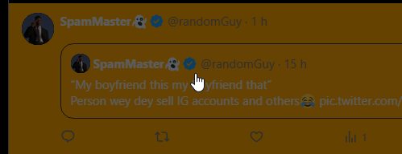
Remover Tweets com Vídeos Falsos
Remove Tweets que contenham uma Imagem carregada de um Link (quando algum bot posta um Link que mostra uma Imagem com um "PLAY" nela, e ao clicar é mandado para o site).
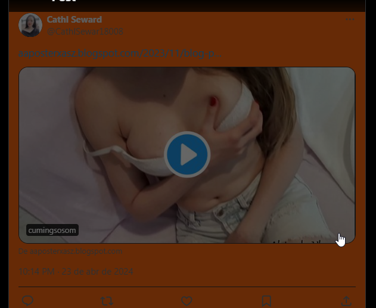
Remover Tweets Automátizados
Remove Tweets Automátizados (Tweets que contém o parâmetro "Automático" inserido pelo Twitter para identificar bots comuns)
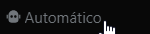
Remover Tweets Patrocinados (Anúncios)
Ativa o Recurso de Detecção e Remove os tweets que sejam Patrocinados automáticamente. Não é tão eficiente quanto um bom bloqueador de anúncios, já que apenas remove os elementos visiveis.
Remover Tweets de Usuários Sem Foto
Remove Tweets de Pessoas que estão usando a Foto Padrão do Twitter (Sem Foto).
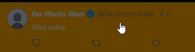
Habilitar Previsão e Zoom das Imagens dos Tweets
Ativa o Recurso de Previsão da Imagem Completa e Função de Zoom nas Imagens dos Tweets, basta passar o mouse por cima de alguma imagem para ve-la completamente, e usar o Scroll (Ctrl+Scroll Up ou Down) do Mouse para ampliar o zoom dela! (Use os cliques do mouse para ocultar a previsão da Imagem rapidamente e Ctrl + S para salvar a imagem original).
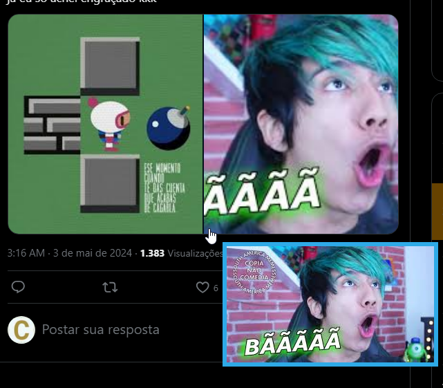
Habilitar Notificações de Depuração
Ativa as Notificações da Extensão em retangulos azuis, que avisa quando uma ação é tomada em algum Tweet. Grande Poluidor Visual da Tela!!
Bloquear Usuário no Twitter ao Detectar em um Filtro
BLOQUEIA o usuário no twitter automáticamente, quando algum Filtro Específico é aplicado no tweet, potencialmente perigoso se o filtro não for usado corretamente, ou se muitos usuários forem banidos em menos de 10 minutos
Os filtros ativos para esta função são:
Filtro de Palavras Banidas Customizadas
Filtro de Tweets com LETRAS GIGANTES
Filtro de Tweets Automátizados
Filtro de Tweets Semelhantes (Anti-Spam)
Remove Tweets caso outro tweet seja Muito Parecido com ele usando Coeficiente de Similaridade de Jaccard (Isso remove TODOS os tweets parecidos).
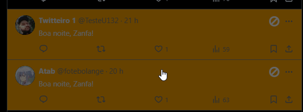
Ativar Filtro
Ignorar os Links, Menções e Multiplos Espaçamentos no Conteúdo
Ignora todos os Links, Menções e Muitos Espaçamentos dos Conteúdos Filtrados (Aumenta a chance de Tweets Spam serem detectados, já que bots usam o mesmo texto, mas com links, menções e espaçamentos Diferentes)
Medida de Correspondência para Identificar Tweets:
Medidor para Definir o Quão Parecido os Tweets devem ser para serem considerados Parecidos ou Iguais, um valor Muito Baixo (Abaixo de 40%) tem grandes chances de confundir tweets que contenham simplesmente uma palavra ou duas iguais. Use com Cuidado.
Controles de Mídia
Ativa Funções Relacionadas á Videos, GIFS e Imagens nos Tweets :D
Pausar Vídeos e Gifs ao Carregar e Habilitar o Controle via Teclado
Pausa Vídeos e Gifs Automáticamente (Os vídeos e gifs são reproduzidos ao passar o mouse por cima deles! Você também pode usar os controles de teclado como Setas para cima, baixo, esquerda e direita para controlar o vídeo e volume, e a tecla Espaço para pausar/reproduzir.)
Habilitar Reprodução Automática de Vídeos do Youtube
Ativa o Recurso de Reprodução Automática de vídeos do Youtube ao carregar (potencialmente problemático, vídeos do youtube embutidos consomem MUITA CPU e memória RAM).
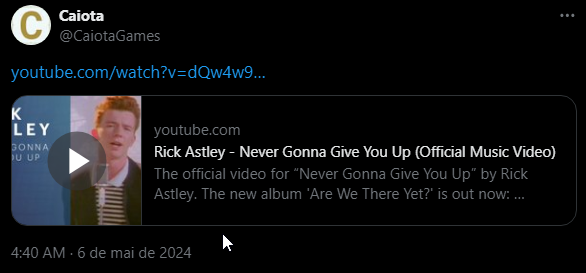
Revelar Vídeos e Imagens Censurados pelo Twitter
Remove Automáticamente a Censura de Vídeos e Imagens assim que elas carregam.
Censurar Todas as Mídias dos Tweets
Censura Todas as Mídias (Imagens e Vídeos) dos Tweets e Remove a Censura ao Passar o mouse.
Tweets com Links
Remover Tweets que contenham Links para sites Externos
Remove Automáticamente os Tweets que contenham Links para sites Externos...
Remover Tweets que contenham APENAS UM LINK
Esta opção é mais eficiente, já que geralmente bots postam um unico tweet com um link
Remover Tweets com Links que Contenham Redirecionamento (Não implementado ainda)
Esta opção é mais eficiente, já que geralmente bots postam um unico tweet com um link
Ações Rápidas nos Tweets
Mostrar Botão de Reportar Tweet para a Extensão (ainda não implementado)
Mostra a Opção de Reportar Tweets para o Algorítimo da Extensão, que sincroniza com os outros usuários para ocultar o mesmo tweet para todos.
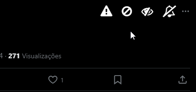
Mostrar Botão de Bloquear Rápidamente
Mostra a Opção de Bloquear o Usuário no Twitter Rápidamente.
Mostrar Botão de 'Ver Menos deste Usuário' Rápidamente
Mostra a Opção de 'Ver Menos deste Usuário' Rápidamente. Só funciona na Página Principal, na aba "Para Você".
Mostrar Botão de Silenciar Usuário Rápidamente
Mostra a Opção de Silenciar Usuário Rápidamente.